Guia de Vinhos do
Centro-Oeste
DF · GO · MT · MS
Como o Cerrado aprendeu a fazer vinho fino, quem está produzindo e o que vale colocar na sua taça.
Uma publicação do Diário de Adega
Antes do primeiro gole
Um brinde ao vinho daqui
Até pouco tempo atrás, falar em vinho fino do Centro-Oeste soava como provocação. Hoje é assunto sério nas melhores cartas do país.
Este guia nasceu das conversas no balcão do Somm's, na 412 Sul. Cada vez que servimos um Syrah do Cerrado, alguém pergunta: "isso é daqui mesmo?". É. E tem uma história bonita por trás, feita de ciência, teimosia e muito sol de inverno.
Reunimos nestas páginas o essencial para você entender essa história, conhecer alguns dos produtores que estão desenhando o mapa do vinho na região e, principalmente, provar com mais curiosidade. No fim, deixamos uma ficha em branco para as suas anotações.
Beatriz CamposSommelièreFrederico CastroSommelier
- 01O Cerrado entra no mapap. 3
- 02Dupla poda em uma páginap. 4
- 03Goiás: altitude a 100 km de Brasíliap. 5
- 04Mato Grosso e Mato Grosso do Sulp. 6
- 05Uvas e estilosp. 7
- 06Roteiro e ficha de degustaçãop. 8
01
Capítulo um
O Cerrado entra no mapa
O problema nunca foi o sol nem o solo. Era o calendário.

A videira de vinho fino evoluiu em climas temperados, com verões secos e invernos frios. No Planalto Central, o ciclo natural da planta colocava a maturação das uvas justamente no verão, a estação das chuvas. Água em excesso na reta final dilui o açúcar, favorece doenças e derruba a qualidade.
Por isso, durante décadas, a uva do Centro-Oeste foi quase sempre de mesa. A virada veio quando pesquisadores e produtores passaram a manejar a planta para que ela amadurecesse no período seco, entre o outono e o inverno.
Nesse período, o Cerrado oferece exatamente o que a uva precisa: dias de sol intenso, céu limpo, quase nenhuma chuva e uma boa diferença de temperatura entre o dia e a noite. O açúcar se concentra sem que a acidez desapareça.
O resultado são tintos de fruta madura e frescor surpreendente, e brancos aromáticos que vêm ganhando prêmios e espaço nas cartas. A região ainda é jovem no vinho, e isso é parte da graça: cada safra traz um produtor novo para conhecer.
Para provar no Somm'sPeça ao sommelier um flight "Syrah em três sotaques": um do Cerrado, um do Novo Mundo e um do Rhône. É a forma mais rápida de entender o que o Planalto tem de particular.
02
Capítulo dois
Dupla poda em uma página
Também chamada de poda invertida: uma ideia simples que mudou o vinho brasileiro fora do Sul.
A técnica foi desenvolvida no Sudeste e se espalhou para Goiás, Distrito Federal e Mato Grosso. Em vez de deixar a videira seguir o próprio ritmo, o produtor faz duas podas por ano para "empurrar" a colheita para a estação seca.
- Poda de formação, no fim do inverno. A planta brota e cresce durante o verão chuvoso, mas os cachos que surgem são descartados. Ela só acumula energia.
- Poda de produção, no fim do verão. Agora sim a videira é induzida a produzir. Os cachos se formam com as chuvas terminando.
- Colheita no inverno seco. Entre junho e agosto, com sol, noites frias e quase nenhuma chuva, a uva amadurece devagar e concentrada.
JAN
FEV
MAR
ABR
MAI
JUN
JUL
AGO
SET
OUT
NOV
DEZ
chuvasmaturaçãocolheita de invernorepouso e poda
Por que funciona no Cerrado
- Sol
- Dias longos e luminosos no inverno, com céu aberto.
- Seca
- Sem chuva na maturação: uvas sãs e concentradas.
- Amplitude
- Noites frescas preservam a acidez e os aromas.
- Controle
- A irrigação permite ajustar a água na medida certa.
03
Capítulo três
Goiás: altitude a 100 km de Brasília
Na Serra dos Pireneus, o Cerrado de altitude virou terroir.

Cocalzinho de Goiás · GO · cerca de 104 km de Brasília
Pireneus Vinhos e Vinhedos
Projeto do médico e sommelier Marcelo de Souza, que plantou os primeiros vinhedos em 2005 a partir de mudas italianas. A vinícola usa a poda invertida para colher no inverno e driblar o período das chuvas.
SyrahTempranilloSangioveseBarbera
Rótulos para procurar
- Intrépido
- Syrah premiado como grande campeão no Wines of Brazil 2023.
- Bandeiras
- Barbera, para quem gosta de tintos de acidez viva.
- Linha Terroir
- Varietais de Syrah e de Tempranillo.
- Terroir Brut
- Apresentado como o primeiro espumante do Centro-Oeste.
Dica de visitaOs vinhos da Pireneus são vendidos principalmente por revendas. Antes de pegar a estrada, confirme com a vinícola se há visitação na data desejada.
04
Capítulo quatro
Mato Grosso e Mato Grosso do Sul
Da Chapada dos Guimarães à porta do Pantanal, o vinho chega a paisagens improváveis.
Chapada dos Guimarães · MT · 62 km de Cuiabá
Locanda do Vale
Fundada por Luiz Oliveira e Raquel Molina, com cerca de quatro hectares de vinhas americanas e viníferas. Repete na Chapada o manejo da dupla poda. Entre os rótulos, um Syrah sem madeira, um Sauvignon Blanc cofermentado com Viognier e um Syrah com 12 meses em carvalho francês. Os vinhos são vendidos na própria vinícola, que recebe visitas agendadas.
Cabernet SauvignonSyrahPinot NoirMarselanSauvignon BlancViognier
Aquidauana · MS · caminho do Pantanal
Terroir Pantanal
Projeto de enoturismo com vinhedos de Sauvignon Blanc, Cabernet Sauvignon, Syrah e Marselan, além de uvas de mesa. O espumante da casa, Florada dos Ipês, é elaborado em parceria com a Don Guerino, da Serra Gaúcha. Trilhas e mirantes do Morro do Chapéu completam a visita.
Sauvignon BlancCabernet SauvignonSyrahMarselan
Distrito Federal e Entorno
Novos vinhedos no Planalto
Ao redor de Brasília, novos projetos de vinho fino surgem a cada safra, apostando na mesma combinação de altitude, inverno seco e dupla poda. Acompanhe o Diário de Adega: vamos apresentar esses produtores nas próximas degustações do Somm's.
Informações de produtores com base em reportagem de A Gazeta (jul. 2023). Preços, horários e rótulos podem ter mudado: confirme diretamente com cada vinícola.
05
Capítulo cinco
Uvas e estilos
As castas que melhor responderam ao sol de inverno do Centro-Oeste.
Syrah
A estrela da região. Fruta escura madura, pimenta-do-reino e violeta, com taninos macios e final fresco. Vai bem com carnes grelhadas e cordeiro.
Sauvignon Blanc
Branco aromático, com notas cítricas e herbáceas. Acidez viva, ótimo para o calor de Brasília e para pratos com ervas.
Tempranillo
A uva da Rioja se adaptou bem à altitude goiana. Cereja, especiarias e couro leve quando passa por madeira.
Barbera
Tinta italiana de acidez alta e taninos baixos. Combina com massas ao sugo, pizza e embutidos.
Marselan
Cruzamento de Cabernet Sauvignon com Grenache. Cor intensa, fruta vermelha e corpo médio.
Viognier
Branca perfumada, com damasco e flores. Aparece em cortes com Sauvignon Blanc e em brancos de mais corpo.
Ficha típica · Syrah do Cerrado
- Cor
- Rubi profundo, com reflexos violáceos
- Nariz
- Amora, ameixa, pimenta-do-reino, violeta
- Boca
- Encorpado, taninos macios, final fresco
- Serviço
- 16 a 18 °C, em taça ampla
- Harmoniza
- Carnes grelhadas, cordeiro, queijos curados
06
Capítulo seis
Roteiro e ficha de degustação
Três passeios saindo de Brasília
- Bate-volta
- Cocalzinho de Goiás e a Serra dos Pireneus, a pouco mais de 100 km. Combine com Pirenópolis.
- Fim de semana
- Chapada dos Guimarães (MT): voe até Cuiabá e suba a Chapada para visitar vinhedo e cachoeiras.
- Viagem longa
- Aquidauana (MS) a caminho do Pantanal: enoturismo, trilhas e natureza.
Sua ficha de degustação
Vinho / produtor / safra
Uva e região
Cor
Nariz
Boca
Com o que eu tomaria de novo
Nota (de 1 a 5 taças)
Leve esta ficha ao Somm'sMostre suas anotações ao sommelier: ele monta um flight a partir do que você mais gostou.
Agora é na taça
Vinhos selecionados, taças servidas no Coravin
Mais de 400 rótulos, flights de degustação, degustações guiadas aos sábados e gastronomia pensada para harmonizar.
Reserve pelo WhatsApp
CLS 412, Bloco A, Loja 27 · Asa Sul · Brasília/DF
Terça a sexta, 15h às 0h · Sábado, 11h30 às 0h
@sommswinebar
Aprecie com moderação · Venda proibida para menores de 18 anos